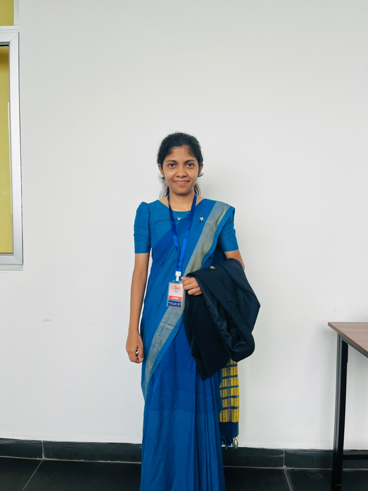

Hi, I'm Thinuri
Uthsarani.
Data Science & Analytics undergraduate turning complex data into clear, actionable insights that drive real decisions.

About
Who I am
I'm an Applied Data Science undergraduate at General Sir John Kotelawala Defence University, passionate about transforming data into clear, actionable insights.
My experience spans the full analytics pipeline — from data cleaning and exploratory analysis to building machine learning solutions and interactive dashboards using Python, SQL, and Power BI.
I'm eager to apply my skills in real-world settings while continuing to grow in AI, data analytics, and data visualization.
Expertise
Skills & tools
Work
Featured projects
Background
Education
BSc in Applied Data Science Communication
General Sir John Kotelawala Defence University — RathmalanaShort Course in Human Resource Management
The Open University of Sri Lanka — MataraGrade 1 – 13
Sujatha Vidyalaya — MataraCredentials
Certifications
Connect
Let's work together
Currently in my final year and actively looking for opportunities to apply data science skills in a professional environment. Open to internships and collaborative projects.